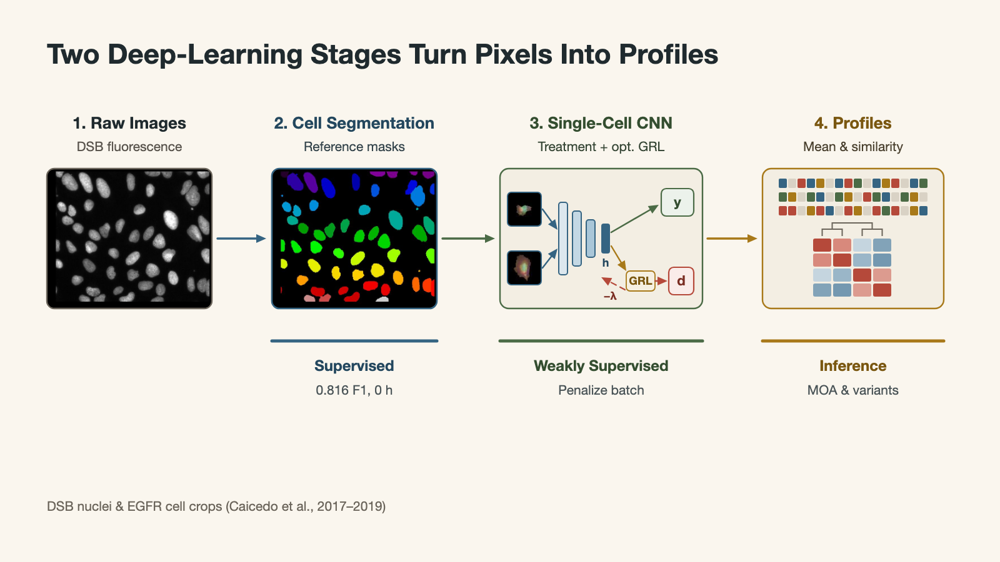
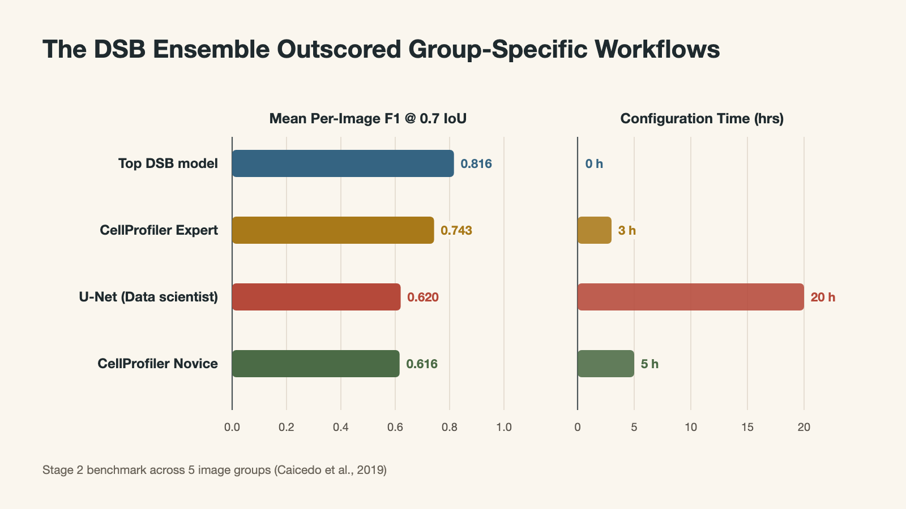
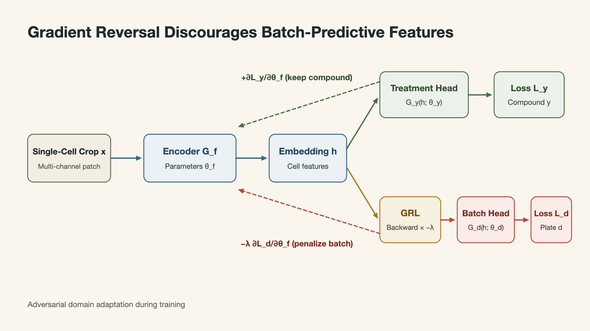

Segment First, Then Deconfound the Cellular Profile
MIT 6.874 · Lecture 21: Image-Based Cell Phenotyping with Deep Learning
In 2012, researchers screening compounds for acute megakaryoblastic leukemia (AMKL) did not train a deep neural network to classify microscopy images end to end. Instead, they segmented DNA-stained nuclei and measured total per-cell DNA content (p. 3; Wen et al., 2012). Comparing the assay’s positive-control compound SU6656 against the neutral DMSO control showed a rightward shift in \(\log_2(\text{Per-cell DNA content})\) from roughly \(6\text{–}8\) to \(9\text{–}11\), confirming that image segmentation could track nuclear polyploidization (with visual cell enlargement noted in the talk); subsequent screen hits, target-identification experiments, and testing of Alisertib led to clinical trials in adult AMKL (recording, 02:55–04:40).
Most biological screens lack a single pre-known morphological readout like cell size or DNA content. When comparing perturbed cell populations across thousands of candidate drugs or gene knockdowns, image-based profiling replaces hand-picked biomarkers with quantitative morphological representations extracted across multi-well plates (pp. 5–6; Caicedo et al., 2016).
MIT 6.874 Lecture 21 (Spring 2021; the syllabus row reads Video processing, structure determination, while the official linked slides and recording—titled Lecture 20: Deep Learning for Cell Imaging Segmentation on YouTube—present guest lecturer Juan C. Caicedo from the Broad Institute on Image-based cell phenotyping with deep learning) splits that profiling workflow into two distinct deep-learning problems (p. 7; 07:40–07:56): cell segmentation (a supervised detection task) and single-cell representation learning (a weakly supervised embedding task with optional adversarial batch correction).

Stage 1: Generic cell segmentation across microscopy image groups
Historically, every time a biology lab changed a stain, microscope objective, or tissue preparation, its segmentation algorithm broke (pp. 8–9; 08:00–09:40). Unlike face detectors in consumer photography—which work across indoor, outdoor, and crowded scenes without per-camera tuning—classical microscopy segmentation stayed brittle and protocol-specific (p. 10; 09:40–10:12).
To test whether one supervised deep model could segment nuclei across divergent microscopy protocols, Caicedo and collaborators organized the 2018 Data Science Bowl ($100,000 prize; reported in the lecture as 3 months, 3,634 teams, 65,333 experiments, and roughly 32,000 manually annotated single cells across 30 experiments—while the published competition paper reports 3,891 first-stage teams, 68,017 submissions, and 37,333 annotated nuclei; p. 11). The dataset spanned five visual image groups across fluorescence and brightfield microscopy, split into a public training set, a feedback test set (Test 1), and a blind final evaluation set (Test 2) with an observed image-group distribution shift between training and held-out splits (p. 12; 11:30–14:55):
| Visual Image Group | Training Share | Test Share | Shift (Test − Train) |
|---|---|---|---|
| Small fluorescent | 80.6% | 67.9% | −12.7 pp |
| Purple tissue | 15.5% | 15.1% | −0.4 pp |
| Grayscale tissue | 2.4% | 0.9% | −1.5 pp |
| Large fluorescent | 0.9% | 11.3% | +10.4 pp |
| Pink and purple tissue | 0.6% | 4.7% | +4.1 pp |
Note that the training shares sum to \(100.0\%\), whereas the test shares reported on p. 12 sum to \(99.9\%\) due to one-decimal rounding. Large fluorescent and pink-and-purple tissue images together made up only \(1.5\%\) of training data yet \(16.0\%\) of test data, forcing models to generalize across stain polarity, cell scale, and crowded tissue boundaries.
How object overlap and F1-score measure segmentation
Each predicted nucleus mask \(A_{\text{pred}}\) is matched against a ground-truth nucleus mask \(A_{\text{true}}\) by Intersection over Union (IoU):
\[ \text{IoU}(A_{\text{pred}}, A_{\text{true}}) = \frac{|A_{\text{pred}} \cap A_{\text{true}}|}{|A_{\text{pred}} \cup A_{\text{true}}|}. \]
At a fixed threshold such as \(\tau = 0.7\) (distinct from the competition’s multi-threshold ranking average across IoU cutoffs), matched pairs exceeding the strict cutoff (\(\text{IoU} > \tau\)) count as true positives (\(\text{TP}\)), unmatched predictions count as false positives (\(\text{FP}\)), and missed real nuclei count as false negatives (\(\text{FN}\)), giving the image-level \(F_1\) score (p. 12, p. 15):
\[ \text{Precision} = \frac{\text{TP}}{\text{TP} + \text{FP}}, \qquad \text{Recall} = \frac{\text{TP}}{\text{TP} + \text{FN}}, \qquad F_1 = \frac{2\,\text{TP}}{2\,\text{TP} + \text{FP} + \text{FN}}. \]
As constructed numerical checks (not lecture data) to build intuition for those thresholds:
- Concentric boundary tolerance: If a predicted circle sits entirely inside a ground-truth circle of radius \(R\), then \(\text{IoU} = \pi r^2 / (\pi R^2) = (r/R)^2\). Hitting the slide’s \(\text{IoU} = 0.7\) boundary requires \(r/R = \sqrt{0.7} \approx 0.8367\), and passing the strict \(\text{IoU} > 0.7\) match rule requires \(r/R > \sqrt{0.7}\)—so even a concentric mask that looks visually close misses over \(16\%\) of the radius at the cutoff.
- Object-count F1 check: In an image with \(21\) real nuclei where a model makes \(19\) predictions—\(16\) exceeding the \(\text{IoU} > 0.7\) cutoff (\(\text{TP}=16\)), \(3\) false splits or background hits (\(\text{FP}=3\)), and \(5\) missed nuclei (\(\text{FN}=5\))—precision is \(16/19 \approx 0.8421\), recall is \(16/21 \approx 0.7619\), and \(F_1 = 32/40 = 0.8000\).
Three architectures—and why the DSB ensemble outscored group-specific workflows
The top three Data Science Bowl entries spanned three distinct segmentation paradigms (p. 14; 15:10–32:10):
- 1st place (
[ods.ai] topcoders) — U-Net & FPN ensemble: An ensemble of 32 trained networks (8 U-Net and Feature Pyramid Network configurations acrossDPN-92,ResNet34/101/152,InceptionResnetV2, andDenseNet121/169trained over 4 cross-validation folds) evaluated with 8-way flip/rotation test-time augmentation (23:00–25:30; count of 32 at 24:04). Caicedo noted that its accuracy margin over second and third place was small relative to its heavy compute cost (24:50–25:25). - 2nd place (
jacobkie) — Feature Pyramid Network with boundary-distance encoding: Rather than predicting binary foreground masks directly, the model predicted multi-scale per-pixel distances from cell interiors to boundaries along four fixed directions (described in the talk as distance/direction cues toward boundaries and centers), improving separation in crowded nuclei (19:20–21:40). - 3rd place (
Deep Retina) — Mask R-CNN: A Mask R-CNN architecture (illustrated with a COCO-pretrainedResNet50-FPNdiagram on p. 14, while theDeep Retinateam’s submitted implementation used a COCO-pretrainedResNet101-FPNbackbone) with a Region Proposal Network (RPN),RoIAlign, and parallel box, class, and mask heads. Other teams ran the same public codebase without matching this score; Caicedo noted that the other teams’ exact configurations were unknown, making hyperparameter calibration and preprocessing a plausible explanation (15:20–18:50).
To measure practical lab effort and accuracy, Caicedo et al. (2019, Nature Methods) compared four segmentation workflows by mean per-image F1-score @ 0.7 IoU across Stage 2 held-out images spanning all five image groups (106 scored images in the benchmark paper, introduced as a 100-image scenario in the talk at 27:56; p. 15):

Training five separate per-group U-Nets (0.620 \(F_1\), 20 hours of estimated data-scientist tuning) trailed a CellProfiler expert (0.743 \(F_1\), 3 hours) and matched a CellProfiler novice (0.616 \(F_1\), 5 hours), with Caicedo noting that imbalanced training coverage across image groups—alongside intrinsic differences in boundary difficulty—likely contributed to lower accuracy on scarce tissue types (29:21–30:10). Using the single pretrained top-performing DSB model reached 0.816 \(F_1\) with zero per-lab configuration time (0 h for an already-trained model)—though because the benchmark changes training data, architecture, and ensembling together, it reflects the full generalist workflow rather than isolating image-group pooling alone. Follow-on community tools adopted all three competition architectures (p. 16): Cellpose (Stringer et al., 2020; U-Nets, supporting both nuclei and whole-cell cytoplasm segmentation), nucleAIzer (Hollandi et al., 2020; Mask R-CNN, targeting nuclei segmentation), and Mesmer (Greenwald et al., 2021; Feature Pyramid Networks, segmenting both nuclei and whole cells).
Stage 2: Weakly supervised single-cell representation learning
Once cells are located, the profiling pipeline follows five steps (p. 19; Caicedo et al., 2017): raw images \(\to\) segmented cells \(\to\) single-cell feature matrix \(\to\) population-level treatment profiles \(\to\) downstream statistical comparisons. Classical profiling computes hand-engineered descriptors—area, shape, color distribution, and nuclear size (p. 20).
Replacing hand-engineered descriptors with learned neural features runs into an immediate supervision problem: there are no ground-truth biological phenotype labels during drug discovery or functional genomics (36:35–37:45). We do not know beforehand which compounds work or which share a mechanism of action.
Weakly supervised profiling (p. 22; Caicedo et al., 2018, CVPR, which located cells via Otsu DNA thresholding; extended in DeepProfiler) solves this by pairing an auxiliary training task with a different main profiling goal:
- Auxiliary task (single-cell treatment classification): Given a cropped single-cell image \(x_k\) from a multi-well plate, we know the applied treatment label \(y_k \in \{1,\dots,T\}\) from the plate map. A CNN extracts an embedding \(h_k = \phi_\theta(x_k) \in \mathbb{R}^d\) and passes logits \(z_k = W h_k + b \in \mathbb{R}^T\) through a softmax cross-entropy loss: \[ \mathcal{L}_{\text{CE}}(\theta, W, b) = -\frac{1}{K}\sum_{k=1}^{K} \log \frac{\exp(z_{k, y_k})}{\sum_{c=1}^{T}\exp(z_{k, c})}. \]
- Main goal (treatment-level profiling): At inference time, we discard the classification head. For each treatment \(i\) with single-cell set \(X_i\), we aggregate cell embeddings into a treatment profile \(\mu(X_i) = \frac{1}{|X_i|}\sum_{k \in X_i}\phi_\theta(x_k)\) and compute pairwise similarity \(Z_{i,j}\) (for example via Pearson correlation or cosine similarity) across treatments (37:45–39:00).
Pairwise graph evaluation and benchmark enrichment
To test whether learned profiles recover real biology without peeking at labels during inference, Caicedo evaluates the all-pairs similarity graph over \(M\) treatments, which contains \(\binom{M}{2} = \frac{M(M-1)}{2}\) undirected connections—for instance, \(M = 13\) points on p. 23 yield \(\binom{13}{2} = 78\) pairwise connections. Ranking all pairs by similarity \(Z_{i,j}\) and checking how often the top \(q\%\) of connections share a known Mechanism of Action (MOA) or pathway relative to the remaining \((100 - q)\%\) yields a fold enrichment score (pp. 23–24).
As a constructed arithmetic check on a \(13\)-node, \(78\)-pair graph (the slide reports \(13\) nodes and \(78\) pairs, while the hit counts below are constructed): if \(12\) of the \(78\) pairs truly share an MOA, and the top \(13\) highest-similarity pairs (\(16.7\%\)) contain \(6\) same-MOA pairs (\(6/13 \approx 46.2\%\)) while the remaining \(65\) pairs contain the other \(6\) (\(6/65 \approx 9.2\%\)), the top connections show a \((6/13)/(6/65) = 5.00\times\) hit-rate ratio and an odds ratio of \((6/7)/(6/59) \approx 8.43\). (Slide 24 does not specify whether its vertical axis uses odds ratios or hit-rate ratios, though later DeepProfiler publications use per-query odds ratios.)
Across three five-channel Cell Painting benchmarks (Nucleus, ER, Mitochondria, Actin/Golgi/Plasma membrane, Nucleoli/cyto RNA) plotted from 0.4% to 2.0% top connections on p. 24 (whose y-axis is labeled verbatim as Folds of enrichment (%)), weakly supervised deep learning (DeepProfiler) outperformed classical features across every threshold:
| Benchmark | Perturbation Scope | Reported Deep Learning vs. Classical at Top 0.4% Connections |
|---|---|---|
BBBC037 |
Gene over-expression (200 genes / ORFs) |
\(\approx 30\times\) vs. \(\approx 9\times\) |
BBBC022 |
Compound screen (1,600 drugs, 453 MOAs) |
\(>8\times\) vs. \(<3\times\) |
BBBC036 |
Compound screen (2,240 drugs, 693 MOAs) |
\(>8\times\) vs. \(\approx 6.6\times\) |
Beyond compound screening, single-cell morphological similarity can quantify phenotypic differences when evaluating whether a sequenced tumor mutation acts as a driver or a passenger (pp. 25–26; 40:20–41:40). Comparing EGFR wild-type cells (\(n = 8{,}457\)), EGFR_p.S645C mutant cells (\(n = 9{,}903\)), and control cells (\(n = 21{,}554\)) showed shifted—though overlapping—single-cell distributions in the two-dimensional projection and a reported variant impact score of 66.9% (an assay separation metric rather than a calibrated probability of oncogenicity).
Batch confounders and Gradient Reversal (GRL)
Weak supervision has an Achilles’ heel: batch effects (BE). The causal diagram on p. 21 shows why naive treatment classification leaks spurious cues. The desired biological path runs CS -> MO -> PH: compound structure (CS) induces a morphological signature (MO), which reveals the phenotype (PH). However, batch effects—plate identity, imaging time, reagent lot, or technician—act as a confounder along two red shortcut paths:
BE -> MO: technical artifacts directly distort cell morphology.BE -> CS -> PH: multi-well plate layouts often organize compounds systematically across specific plates or batches, creating a shortcut from batch to compound identity and phenotype prediction.
Because the CNN only needs to predict which treatment well a cell came from, it can memorize plate lighting or edge artifacts instead of biology. On p. 27, embeddings colored by platemap form tight batch islands; post-hoc batch correction collapses some global offset yet leaves visible plate-correlated structure behind (41:45–42:15).
To discourage batch-predictive features during training, Caicedo introduces an adversarial Gradient Reversal Layer (GRL) (p. 28; Ganin & Lempitsky, 2015; 42:15–43:40):

Let \(h = G_f(x; \theta_f)\) be the shared encoder embedding (denoted features f on p. 28), \(\hat{y} = G_y(h; \theta_y)\) the treatment head with loss \(L_y\), and \(\hat{d} = G_d(\mathcal{R}_\lambda(h); \theta_d)\) the batch/domain classifier head with loss \(L_d\). In the forward pass, \(\mathcal{R}_\lambda(h) = h\) acts as the identity map; in backpropagation, the custom GRL backward rule maps any incoming upstream gradient \(g\) to \(-\lambda g\) (\(\lambda > 0\)). Writing \(\frac{\partial L_d}{\partial \theta_f}\) for the domain-loss gradient with respect to \(\theta_f\) before reversal, one stochastic gradient descent step with learning rate \(\eta\) updates the three parameter blocks as:
\[ \theta_y \leftarrow \theta_y - \eta \frac{\partial L_y}{\partial \theta_y}, \qquad \theta_d \leftarrow \theta_d - \eta \frac{\partial L_d}{\partial \theta_d}, \qquad \theta_f \leftarrow \theta_f - \eta \left(\frac{\partial L_y}{\partial \theta_f} - \lambda \frac{\partial L_d}{\partial \theta_f}\right). \]
Notice the minimax tension: \(\theta_d\) improves at predicting the plate/batch \(d\), while the \(-\lambda \frac{\partial L_d}{\partial \theta_f}\) term pushes \(\theta_f\) uphill on \(L_d\) (discouraging batch-predictive features) while \(\frac{\partial L_y}{\partial \theta_f}\) pulls \(\theta_f\) downhill on \(L_y\) (preserving treatment discrimination).
As a constructed 1D gradient check, let \(h = \theta_f x\) with \(x = 2.0\), \(\theta_f = 0.5\) (\(h = 1.0\)), linear heads \(G_y(h) = w_y h\) and \(G_d(h) = w_d h\) with \(w_y = w_d = 1.0\), squared-error losses \(L_y = \frac{1}{2}(\hat{y} - y)^2\) and \(L_d = \frac{1}{2}(\hat{d} - d)^2\), targets \(y = 2.0\), \(d = 2.0\), and \(\lambda = 0.5\). Before reversal, both losses push \(\theta_f\) in the same direction:
\[ \frac{\partial L_y}{\partial \theta_f} = (\hat{y} - y)\,w_y x = (1.0 - 2.0)(1.0)(2.0) = -2.0, \qquad \frac{\partial L_d}{\partial \theta_f} = (\hat{d} - d)\,w_d x = (1.0 - 2.0)(1.0)(2.0) = -2.0. \]
With GRL, the effective encoder gradient becomes \(-2.0 - 0.5(-2.0) = -1.0\), subtracting half of the batch-aligned component. With the heads held fixed and a small positive step \(\eta\), this combined update still decreases both \(L_y\) and \(L_d\) (only the \(-\lambda \frac{\partial L_d}{\partial \theta_f} = +1.0\) contribution opposes \(L_d\)), whereas in this equal-gradient example increasing \(\lambda\) above \(1.0\) reverses the net sign (more generally, reversing aligned gradients requires \(\lambda \|g_d\| > \|g_y\|\)).
On p. 29, training ResNet18GRL across 9 genetic perturbation/control classes (0_CTRL, 0_DGK, 0_FIG4, 0_GDAP1, 0_GUK1, 0_KIF1A, 0_MFN2, 0_RRM1, 0_VCP) and 9 dataset/batch sources (1_DS1 through 1_DS9) produced visible mixing of dataset colors (1_DS1–1_DS9) across both training and held-out validation projections while maintaining broad biological groupings (with visible overlap among some validation classes and no quantitative residual batch-accuracy metric reported).
Open challenges
Caicedo closes both parts of the lecture with four unsolved bottlenecks (p. 17, p. 30; 33:15–34:00, 43:50–44:25):
- Segmentation scale and label efficiency: Public annotated microscopy datasets remain small compared with natural-image benchmarks, making active learning from a few corrected examples a promising way to reduce expert annotation effort (33:46).
- Stronger domain adaptation and explainability: Adversarial batch correction remains an active research problem—Caicedo introduced
GRLas an approach his group was currently testing (42:17)—and deep single-cell embeddings remain difficult for biologists to interpret compared with classical morphology metrics.
Lecture and sources
- MIT 6.874 Spring 2021 official schedule (Lecture 21, May 6, 2021; syllabus row text reads Video processing, structure determination, while the linked slides and recording cover Caicedo’s cell phenotyping lecture) and official lecture recording (45:19; titled Lecture 20: Deep Learning for Cell Imaging Segmentation on YouTube).
- Juan C. Caicedo, Image-based cell phenotyping with deep learning, Lecture 21 slides (32 pp.), especially pp. 2–3, 6–17, 19–31.
- Key cited studies: Wen et al., Cell (2012) (AMKL leukemia screen / Alisertib); Caicedo et al., Curr. Opin. Biotechnol. (2016) (image-based profiling overview); Caicedo et al., Nature Methods (2017) (profiling pipeline); Caicedo et al., CVPR (2018) (weakly supervised single-cell CNN); Caicedo et al., Nature Methods (2019) (2018 Data Science Bowl evaluation); Stringer et al., Nature Methods (2020) (
Cellpose); Hollandi et al., Cell Systems (2020) (nucleAIzer); Greenwald et al., bioRxiv (2021) (Mesmer); Ganin & Lempitsky, ICML (2015) (Gradient Reversal Layer). - Original explanatory figures: create_figures.py and manifest.json. Constructed worked checks (concentric-circle \(\text{IoU}=0.7\), object-count \(F_1\), 78-pair enrichment ratio, and 1D
GRLgradient step) are labeled explicitly and separated from lecture-reported measurements.